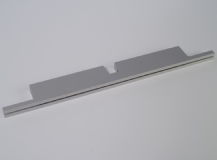
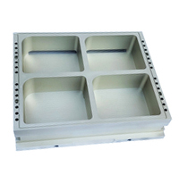

› Промышленное оборудование
Оборудование
Качественное пищевое оборудование для различных предприятий – это возможность производить большие объемы продукции, соблюдая все необходимые стандарты и сертификаты. Поэтому компания AxisMetal предлагает в продажу надежное оборудование для работы, которое соответствует нужному количеству технических характеристик. В ассортименте компании представлено:
-
Матрица 400х300mm на полуавтоматический трейсилер.

Цена: 55 400 грн
-
Матрица 430х350mm на полуавтоматический трейсилер.
Цена: 75 700 грн
-
Матрица 250х200mm на ручной трейсилер.

Цена: 18 550 грн
-
Нож для трейсилера, круглый
Цена: 2 500 грн
-
Нож для трейсилера, прямоугольный

Цена: 2 500 грн
-
Тефлонированная паяльная плита на термоформер

Цена: 18 250 грн
-
Комплект продольной резки мягкой пленки на термоформер.
Цена: 40 000 грн
-
Комплект поперечной резки мягкой пленки на термоформер.
Цена: 40 000 грн
-
Нож для поперечной резки мягкой пленки на термоформер

Цена: 1 500 грн
-
Комплект формовки на термоформер.
Цена: 120 000 грн
-
Комплект запайки на термоформер.

Цена: 50 000 грн
-
Настольный ручной трейсилер SOLDER MN-1

Цена: 34 800 грн
-
Напольный полуавтоматический трейсилер LIPOVAK KV620

Цена: 718 593 грн
-
Матрица 412 х 332 мм для термоформера на 4 лотка
Цена: 280 000 грн
Отдельно предложены необходимые запчасти для термосварочной техники.
Благодаря индивидуальному подходу к каждому клиенту нашей команде специалистов удается предложить в продажу высококачественные трейсилеры, которые могут запаивать лотки различных форм и размеров. За счет длительных экспериментов нам удалось создать лучшие инженерные решения, согласно которым все заказчики могут выбрать и купить оборудование для любого бюджета.
Особенности полуавтоматических трейсилеров
Полуавтоматический трейсилер или сварщик лотков – это специальный аппарат, выполняющий качественное, надежное. упаковка контейнеров с разной продукцией, используя пленку.
Представленные устройства считаются незаменимыми на таких предприятиях, как:
цехи – мясные, рыбные;
Несмотря на конкретную область эксплуатации, такие трейсилеры можно использовать следующим образом:
| Автономно | Когда сварщик эксплуатируется как отдельный аппарат, используемый для упаковки всяческой продукции. |
| В основе производственной линии | В таком случае сварщик является важным помощником при выполнении полноценного производственного процесса. |
Современные сварщики для максимального удобства эксплуатации имеют возможность выключать функцию замещения газа в лотка. При этом показатели производительности достигают 6-10 циклов в минуту. При использовании функции подачи инертного газа производительность уменьшается до 2-6 циклов.
Ручные трейсиллеры
Лучший вариант для небольших производств, супермаркетов, столовых и т.д., который легко
помещается на столе
Подробнее
Пельменные машины
Универсальная формовочная пельменная машина специально
предназначена для
работы в небольших цехах для производства большого ассортимента продукции: пельмени, вареники,
равиоли
и т.д. с разными начинками (мясная, овощная)
Подробнее
Термоформеры
В нашем ассортименте есть термоформеры, которые пользуются спросом
в
сфере
пищевой промышленности С помощью такого оборудования можно оперативно создать качественное и
аккуратно
упаковка, выполненная из рулонных пленочных материалов.
Подробнее
Трейсилеры полуавтоматического типа
Оптимальное решение для производств с ограниченной производительностью при необходимости
упаковки как из МГС
да и
без него.
Подробнее
Ручной трейсилер или сварщик
Представленный ручной трейсилер используется для оперативной упаковки различных лотков, контейнеров, в которых находятся разные продукты питания. Чаще такие сварщики эксплуатируются в условиях розничной. торговли, позволяя упаковать следующую продукцию:
01
мясные и рыбные изделия;
02
колбасы и сыры;
03
зелень, овощи и фрукты;
04
печенье и прочее.
Что касается производительности, этот критерий напрямую связан со скоростью работы человека, которая Соответствует за упаковку продукции на предприятии В результате будет обеспечен процесс герметичного запайки и упаковки продуктов питания, которые могут храниться в течение определенного промежутка времени.
Трейсилеры укомплектованы регулятором температур для самостоятельной коррекции температуры запайки лотков. Но для этого следует учесть особенности материала, из которых выполнены пленка и лоток.
Чтобы обеспечить безопасную и правильную эксплуатацию машины, потребуется провести профессиональную наладку упаковочного оборудования, проводимого специалистами компании AxisMetal. Они помогут провести монтаж, регулировка и тестирование агрегата в различных рабочих режимах, а также предлагают консультацию для заказчика, направленную на обучение персонала пользованию трейсилером.
Термоформовочное оборудование для предприятий
Термоформер относится к списку специализированного оборудования, предназначенного для качественного процесса упаковки. разных товаров как продовольственных, так и непродовольственных. Автоматические аппараты способны самостоятельно создавать надежное упаковка. Для формирования такой упаковки понадобится несколько рулонов пленки, с помощью которых удачно делают мягкие или жесткие упаковочные изделия.
Работа упаковочных аппаратов осуществляется в несколько основных этапов:
01
Начальный этап – формирование лотков с использованием нижней пленки.
02
Закладка продуктов в уже подготовленные лотки.
03
Вакуумирование или наполнение газом, а затем товар запаивают пленкой из верхнего рулона.
04
Запаянные лотки разрезают специальными ножами.
Благодаря активной эксплуатации термоформеров на современном производстве удается продлить срок хранения продовольственной продукции. Ведь вакуум или газ способны сохранять не только свежесть товара, но и его вкус. качества, товарный внешний вид.
Покупка запчастей для термосварочной техники

Выбирая качественные запчасти для термозапаивающей техники, необходимо обращаться за помощью к проверенным. поставщиков и изготовителей. Наша компания AxisMetal предлагает собственную помощь в процессе поиска и подбора определенных комплектующих, деталей для замены. Причем специалисты готовы помочь подобрать запчасти не только для нашего оборудования, а для термозапаечной техники других производителей – отечественных и зарубежных.
Клиент может самостоятельно заказать нужные детали в телефонном режиме или заказать диагностику, ремонт аппаратов от наших профессионалов. Мастер выезжает по указанному адресу и проводит тщательную диагностику всего устройства, определяя, какие именно запчасти понадобятся и в каком количестве.
В результате можно подобрать действительно необходимые детали по заказу, определившись со сроками их поставки. Вся продукция нашей компании – это высококачественные комплектующие, которые предложены по демократичным ценам из официальной гарантией. Все это позволит продлить эксплуатационные сроки конкретного оборудования, за исключением длительной простой техники на производстве.